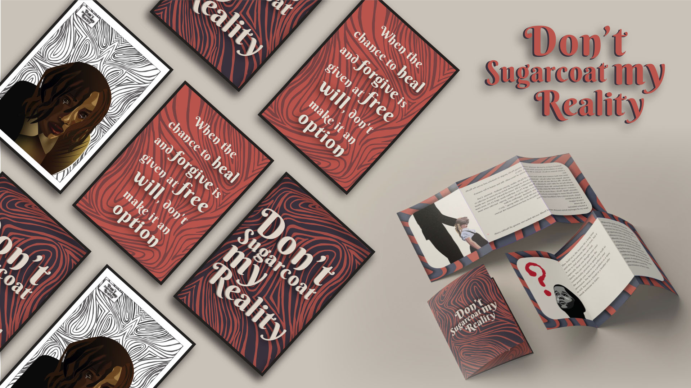

Philip Petaia
- Bachelor of Design
- Major in Communication Design
biography
Hi, my name is Philip. I am currently in the final year of my Diploma in Design. I have always been passionate about the crazy fleurs and the freedom of art and knew I wanted a job in the creative industry. Studying painting and sculpture throughout high school helped me to pursue a career in design here at The University of Waikato.
Since starting my tertiary study, the diploma allowed me to explore different subjects of design, from web design, society, culture and media, info vis, branding, design thinking and now to my portfolio/capstone. It is important for me to know how design is evolving in the future to advocate and engage with the people of society. We have the power and the responsibility to create a visual representation of things that are important and will lead to a different perspective on the world. As a designer, I will educate and preserve the knowledge that will keep us evolving and growing.
project description
As a starting point, I would like to explore how we communicate with youth in our community when it comes
to mental health issues, as well as the support for mental health support systems within schools,
churches, or workplaces:
Specifically, I would like to target this research toward young Polynesian males' mental health in
general since they tend to be more affected as they mature, while also exploring all genders,
specifically youth and young adults. Mental health is a problem, especially in New Zealand.
Through this project, I hope to raise awareness about the concerns of avoiding hidden stories of our
mental health. Helping people better understand how oppression contributes to suicide and depression. By
supporting these causes, we acknowledge that their story existed then and still exists today. To bring
about positive change, we need to give ourselves a chance to do better and be better for our community.
We didn't know then, but now we do.
Don’t sugarcoat my reality

For more information contact us
Email: degreeshow@waikato.ac.nz
Faculty phone: 0800 924 528
Faculty information: cs.waikato.ac.nz